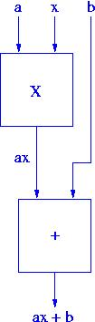
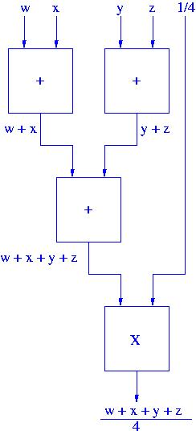
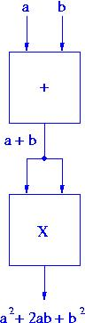
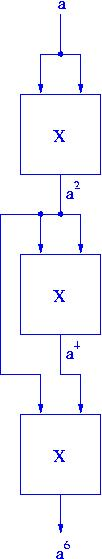

EE 306, Fall 2013
Problem Set 1
Due: 11 September, before class
Yale N. Patt, Instructor
TAs: Ben Lin, Mochamad Asri, Ameya Chaudhari, Nikhil Garg, Lauren Guckert,
Jack Koenig, Saijel Mokashi, Sruti Nuthalapati, Sparsh Singhai, Jiajun Wang
Please turn in the Student Information Sheet with a recognizable photograph on the same day you turn in this problem set.
(Adapted from problem 1.5 in the textbook)
Say we had a "black box," which takes two numbers as input and outputs their sum. See Figure 1.7a in the Textbook. Say we had another box capable of multiplying two numbers together. See figure 1.7b. We can connect these boxes together to calculate p * (m + n). See Figure 1.7c. Assume we have an unlimited number of these boxes. Show how to connect them together to calculate:
ax+b

The average of the four input numbers w, x, y, and z

a2 + 2ab + b2 (can you do it with one add box and one multiply box?)

a6 (can you do it using only 3 multiply boxes?)

(1.14)
Suppose we wish to put a set of names in alphabetical order. We call the act of doing so sorting. One algorithm that can accomplish that is called the bubble sort. We could then program our bubble sort algorithm in C, and compile the C program to execute on an x86 ISA. The x86 ISA can be implemented with an Intel Core microarchitecture. Let us call the sequence "Bubble Sort, C program, x86 ISA, Core microarchitecture" one transformation process.
Assume we have available four sorting algorithms and can program in C, C++, Pascal, Fortran, and COBOL. We have available compilers that can translate from each of theses to either x86 or SPARC, and we have available three different microarchitectures for x86 and three different microarchitectures for SPARC.
How many transformation processes are possible if instead of three different microarchitectures for x86 and three different microarchitectures for SPARC, there were two for x86 and four for SPARC.
120
(2.3)
Assume that there are about 400 students in your class. If every student is
to be assigned a unique bit pattern, what is the minimum number of bits required to do this?
9
How many more students can be admitted to the class without requiring additional bits for each student's unique bit pattern?
112
(Adapted from 2.13)
Without changing their values, convert the following 2's complement binary numbers into 8-bit 2's complement numbers.
010110
0001 0110
1101
1111 1101
1111111000
11111000
01
00000001
(Adapted from 2.17)
Compute the following. Assume each operand is a 2's complement binary number.
01 + 1011
1100
11 + 01010101
01010100
0101 + 110
0011
01 + 10
11
Without changing their values, convert the following 8-bit 2's complement binary numbers into decimal numbers.
01010101
85
10001101
-115
10000000
-128
11111111
-1
Express the value 0.3 in the 32-bit floating point format that
we discussed in class today. Feel free to only show fraction bits [22:15],
rather than all the fraction bits, [22:0]. Notation: The symbol [22:15]
signifies all 8 bits from bit 22 to bit 15.
0 01111101 00110011
Convert the following floating point representation to its
decimal equivalent:
1 10000010 10101001100000000000000
-13 19/64
(Adapted from 2.50) Postponed to Problem Set 2.
Perform the following logical operations. Express your answers in hexadecimal notation.
xABCD OR x9876
x1234 XOR x1234
xFEED AND (NOT(xBEEF))
(2.54) Postponed to Problem Set 2.
Fill in the truth table for the equations given. The first line is done as an example.
Q1 = NOT (NOT(X) OR (X AND Y AND Z))
Q2 = NOT ((Y OR Z) AND (X AND Y AND Z))